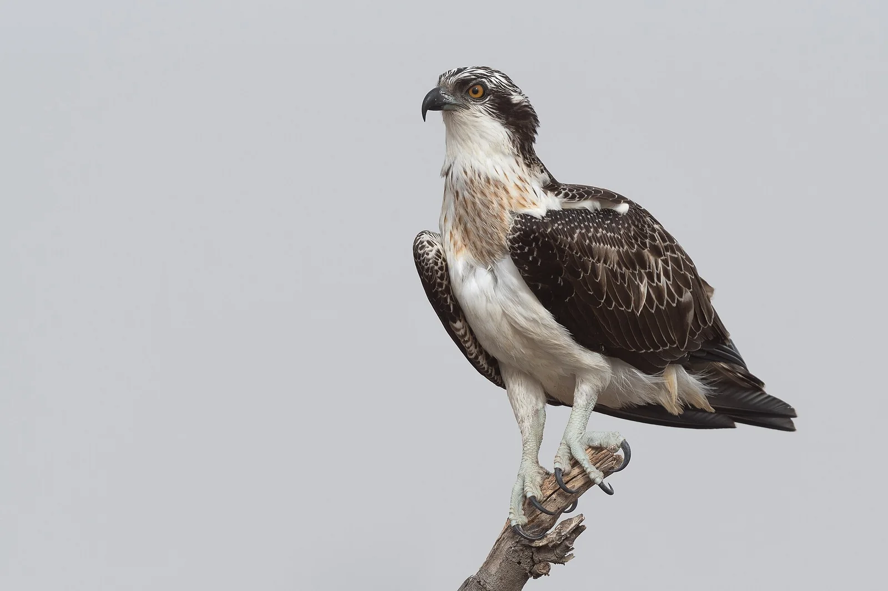

Back to the indexNO. 059 · Hunters of the Sky / Pandionidae · Ospreys
Osprey
鹗 · è Pandion haliaetusThe world's fish hawk — a fisher with non-slip soles
It does one thing all its life: catch fish. It plunges into the water, locks its talons into the prey and powers back into the air, the fish always held head-first to cut drag. The undersides of the toes carry fine spines that grip a slippery fish — evolution has fitted it out with a complete set of fishing tools.
Gallery
One scientific illustration for shape and colour blocks, two field photographs for how it looks in real light. Click any image to enlarge.
Identification
- HeadCrown white and finely streaked, a broad dark brown mask through the eye, nape dark brown.
- PlumageUpperparts dark brown, underparts white, usually with brown streaking or a band across the breast — more marked in the female.
- UnderwingIn flight the underwing is white with a conspicuous black patch at the carpal joint, and black tips.
- FeetThe underside of the toes is covered in spiny scales and the outer toe is reversible, giving a two-forward, two-back grip designed for holding fish.
Behaviour
It circles or hovers above the water, locks on, folds its wings and plunges, throwing up a burst of spray and then beating hard to get airborne again. It often eats on a dead tree or a power pole at a reservoir or on the coast. A winter visitor in South China, with regular wintering records at Zhuhai's reservoirs and along the coast. Its range is almost worldwide — one of the few raptors present on nearly every continent.
Voice
A series of sharp whistles, 'chewk—chewk—chewk', usually near the nest or when alarmed.
Where to find it in Zhuhai
- Qianwu Reservoir
- Jinwan coast
- Hengqin estuary
- Dajingshan Reservoir